안전을 위한 공공디자인 8원칙
安全
위험이 생기거나 사고가 날 염려가 없음
Something that is safe does not cause physical harm or danger.
안전을 위한 공공디자인
일반적으로 디자인(Design)이라 함은 ‘대상물을 만들기 위한 계획(a plan for the construction of an object )을 뜻한다. 하지만 이러한 사전적 의미 외에 다양한 해석들이 존재하는데 특히 ’계획‘과 ’과정‘에 더 큰 의미들을 두게 되는 경향이 근래 들어 많이 나타나고 있다. 작금의 디자인 트렌드는 유형적 분류범주들 즉, 제품디자인, 건축디자인, 시각디자인과 같은 분류에서 지속가능디자인(Sustainable Design), 유니버설디자인(Universal Design), 인클루시브 디자인(Inclusive Design)과 같은 형이상학적인 개념적 분류로 나뉘며 디자인의 해석이 넓어지게 되었다. 이는 디자인의 목적이 대상물의 완성에만 있는 것이 아니라 그 대상물이 영향을 미치게 될 환경, 사용자, 사회, 경제와의 맥락을 고려하는 것이 중요하게 되었다는 의미이기도 하다.
2005년부터 우리나라에서는 ’공공디자인‘이라는 용어로 이러한 개념들 일부가 발현되었는데 2016년 제정된 공공디자인진흥법에서는 문화적 공공성과 심미성 등 좀 더 형이상학 측면에 가치를 두는 방향으로 정의 내리고 있다. 또한 2018년도 공공디자인 진흥종합계획에서는 5대 전략 중 ’생활 안전을 더하는 디자인‘을 그 첫 번째 전략으로 수립하고 범죄예방 협력체계 디자인, 교통안전 디자인, 재난대비 안전디자인의 3개 과제를 설정하고 마을단위 범죄예방 통합협력체계 디자인, 학교 폭력예방 통합협력체계 디자인, 여성 폭력예방 및 안심디자인, 어린이 교통안전 통합협력체계 디자인, 공영주차장 안전디자인, 재난 대비 공간 및 공공용품 안전 디자인 보급 등의 6개 세부 실천과제를 지정하였다.
공공의 안전과 이익을 위시로 하는 공공디자인의 개념은 한국에서 발현된 디자인에 대한 형이상학적이고 주체적인 해석으로 볼 수 있으며 우리 일상에서 디자인된 인공물에 대한 좀 더 사려 깊은 관점과 해석을 가질 수 있게 해준 면에서 그 가치를 찾을 수 있다.
“ Public Design
대한민국에서 진행되고 있는 사회적 현상과 문화적, 경제적, 환경적 변화에 대응하는 ‘디자인’의 역할 확장에 따라’디자인’ 을 통해 사회의 공공적 가치를 향상시키는 전략의 유형과 방법론“
‘온전한 정온화’개념의 안전
‘안전(安全)’이란 사전적 정의로 ‘위험이 생기거나 사고가 날 염려가 없음. 또는 그런 상태’를 의미하고 있다. 사전적 의미로는 위험하지 않은 것. 마음이 편안하고 몸이 온전한 상태를 뜻하고 일반적 의미로는 사고의 위험성을 감소시키기 위하여 인간의 행동을 수정하거나 물리적으로 안전한 환경을 조성한 조건이나 상태를 뜻하기도 한다.
하지만 산업 환경과 재난과 관련해서 ‘안전’이라는 단어나 많이 사용되다보니 극단의 상황과 관련해서 안전을 떠올리는 경우가 많다. 안전은 협의의 의미로서 특정 장소에 대한 특히 산업현장에서의 사고예방이나 의약품, 구조·구급품, 도로에서 긴급 상황에 사용되는 삼각대 등 일부 제품이나 특수한 장소에 관련된 것으로 인식되고 있다. 또한 안전한 보행과 안심 주거지 형성과 같은 공간단위의 사고 예방 차원으로 이해되고 있기도 하다. 국회 안전디자인 포럼 자료집에서는 안전디자인의 영역을 크게 재해/재난 방재디자인, 소방방재 디자인, 생활안전 디자인, 치안/예방 디자인, 구급/구간, 매체, 정책 등으로 구분하여 제시하고 있는 것을 볼 수 있다.
앞의 사전적 의미에서 봤듯이 안전은 위험이 생기지 않는 온전한 정온화 상태의 의미를 가지고 있다. 지금까지의 디자인이 위험과 사고가 생기는 상황이나 이를 상정하고 ‘사고’중심의 관점에서 좀 더 제안되어 왔다. 광의의 개념에서 안전을 위한 디자인은 공간환경의 정온화를 유지할 수 있는 다양한 조건들을 마련하는 개념으로 확장되어야 한다. 공간, 시설, 매체들은 자연스러운 사용속에서 부정적 이벤트의 발생을 억제할 수 있는 기능을 가지고 있어야 한다. 즉, 안전디자인의 개념은 범죄와 재난의 직접적 대안의 제시 외에 아무것도 일어나지 않는 정온화상태(a negative-free state)를 유지할 수 있는 상황의 조성을 갖추어야 한다.
이를 통해 유니버설 디자인, 인크루시브 디자인과 함께 사람의 사용성을 배려하는 디자인 전략으로 활용될 수 있을 것이다.
공공디자인을 통한 환경안전 전략
1. 예측과 가정 기준의 계획 전략
Pre-Production / prediction
2. 인지적 심리적 기반의 전략
(Sensory) Perception / Psychological Recognition
3. 은유적 간접적 방법론의 전략
Metaphoric passive Methods
* 안전디자인의 다양한 정의
| 안전디자인 인증시스템 구축을 위한 기반조사 | 제품·시설·공간을 디자인 할 때 전 라이프사이클을 고려하여 주 기능의 안전 달성도를 높이고, 타 기능과의 상승적 융합을 통해 안전성·사용편의성·기능성, 사용자 특성, 심미성 등을 동시에 고려하는 디자인 | |
| 행정안전부 2010년 안전문화 선진화 추진계획 | 제품·시설·공간 등에 설계·제조·건축·운영 등의 형태로 적용되어 전 기능의 안전 달성도를 높이고, 타 기능과의 상승적 융합을 통해 사회 안전 수준을 향상시키는 것 | |
| 국회 안전디자인 포럼 | 안전과 디자인이 합쳐진 단어. 안전이 요구되는 사물, 공간, 행위 등에 디자인 개념을 적용하여 안전하면서 사용하기 쉽고, 쓰기 편리하며, 보기 좋고 좋은 느낌을 얻을 수 있도록 배려하는 디자인 | |
| ASCC(Australian Safety and Compensation Council) 안전디자인 지침서 | 제품의 라이프사이클 동안의 위험요소를 제거하거나 최소화하기 위해 초기 디자인 과정에서 위험 발견과 위험 통제 조치를 통합하는 과정 | |
| 도시안전과 디자인 | 행정안전부가 추진코자 하는 ‘한국형 안전도시’란 안전·안심·안정된 지역을 만들기 위해 지역사회 구성원들이 합심, 노력하는 안전 공동체를 형성하여 각종 안전사고와 재난 예방을 위한 환경을 개선해 가는 지역 및 도시 |
* 관련 디자인 이론과의 연관성 분석
안전디자인은 유니버설디자인 및 범죄예방환경디자인(Crime Prevention Through Environmental Design)이론과 ‘생활환경에서의 신체적·정신적 위해요소에 대한 물리적·비물리적 차원의 디자인적 대응’이라는 점에서 많은 유사점을 지님.
공공디자인 관점에서의 안전디자인은 정온화형 하드웨어적 안전개념과 소프트웨어적 측면을 강화하여 일반적 사용환경 속에서 온전한 정온화(Whole Calming)를 추구하는 디자인 전략을 포함함.
범죄예방환경디자인
(CPTED_Crime Prevention Through Environmental Design)의
이해
안전디자인은 CPTED(셉테드)와 밀접한 관계를 갖는데 CPTED는 범죄학, 건축학, 도시공학 등 학문 응용 분야로서 환경설계를 통한 범죄예방건축설계기법을 지칭한다. CPTED는 시설뿐 아니라 범죄를 예방하기 위한 환경으로 조성하는 기법 및 제도를 통칭한다. CPTED는 1971년 레이 제프리(Ray Jeffery)가 만든 용어로서 방어적이며 적정한 디자인과 공간 활용성 강화를 통해 범죄 발생의 기회를 줄이고, 시민이 안전감을 느낄 수 있도록 유도하는 것을 의미한다.
실제 영국, 미국 등 해외에서 CPTED의 적용으로 범죄가 줄어드는 것으로 보고되는데 영국의 최근 조사에 의하면 방범환경 설계제도(SBD : Secured by Design Award Scheme) 가 반영된 마을이 주거범죄는 50%, 자동차범죄는 60%, 손괴범죄는 25%로 감소하고 미국의 경우는 특정 지역에 한해 CPTED 적용 이후 범죄 감소율이 20%~50%까지 있었다.
CPTED의 전개
1961
제인 제이콥스(Jane Jacobs)가 저서 『The Death and Life of Great American Cities』에서 도시 재개발에 따른 범죄 문제에 대한 해법을 도시 설계방법을 통해 제시하면서 유래
1971
레이 제프리(C. Ray. Jeffery)는 『Crime Prevention Through En-vironmental Design』에서 물리적 환경 개선을 통한 범죄 통제 주장
1972
오스카 뉴먼(Oscar Newman)의 『Defensible Space』등의 저서에서 환경 설계와 범죄와의 상관관계 연구가 발표됨. 뉴먼은 영역성, 자연적 감시, 이미지, 입지조건 등의 네 가지 요소에 의한 사회통제의 실효성 향상 주장
1980년대
CPTED의 학술적 접근을 넘어 정책적으로 발전된 시기
- 영국의 내무부는 Ronald Clarke의 상황적 범죄예방이론을 활용한 ｢Designing out Crime(범죄퇴치디자인)｣ 프로그램을 최초로 실시
1990년대
CPTED 개념을 범죄예방정책에 실용화시킨 방안 등장
2000년대 이후
기존 물리적 환경설계를 강조하는 1세대 CPTED를 넘어 사회‧문화적 요소를 강조하는 2세대 CPTED로 발전
CPTED Framework
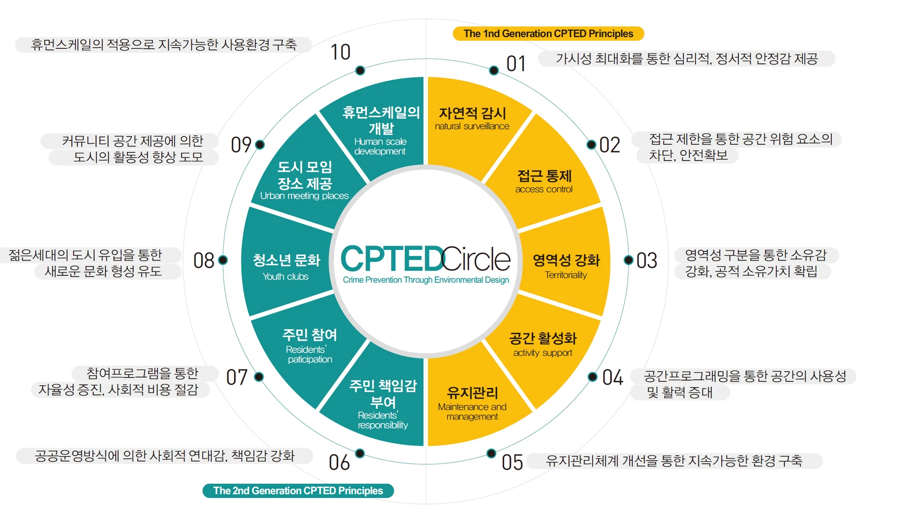
안전을 위한 공공디자인 8원칙은 ‘안전을 위한 공공디자인’을‘공공 환경의 위험요인을 일상적 차원에서 사전적, 간접적으로 자연스럽게 줄이고, 잠재된 안전과 건강상의 위험요소를 최소화하는 예방 차원의 물리적 안전과 이에 부가하여 사용자의 활발한 사용을 고려하는 관점을 기반으로 한다.
이렇듯 입체적 관점에서 온전한 정온화(Whole Calming) 개념으로 안전디자인을 바라보는 것은 ‘생활환경에서의 신체적·정신적 위해요소에 대한 물리적·비물리적 차원의 디자인적 대응’이라는 광의적 관점에서 공공디자인의 확장성을 추구하고자 함이다.
안전을 위해 공공디자인하기 8가지
공간적 투명 S.T.C_Show-Through Clearance
시각적 압박 V.P.P_Visual Pressure Point
인지적 정보 C.I.F_Cognitive Information Face
심리적 유도 P.I.F_Psychological Inducement Effect
양성적 사용 P.U.S_Positive Use Support
순차적 배치 H.L.O_Highlight & Lowlight Order
공간적 활성 S.A.P_Spatial Activation Program
협력적 관리 S.C.G_Safety Cooperative Governance
안전공공디자인 8원칙
공간의 투시율을 강화하면 안전해진다.
“공공공간을 보여지게 하자”
시각적 익명성을 강화하면 안전해진다.
“공공공간을 보고있다고 느끼게 하자”
여기는 어떤 곳이라고 알려주면 안전해진다.
“공공공간의 영역에 채우기를 하자”
지시하지 말고 유도하면 안전해진다.
“간접적으로 숨겨서 알려주자”
사용자 행동에 맞춰 지원하면 안전해진다.
“공공공간을 사용자 행태에 맞추자”
먼저 보아야 할 것을 강화하면 안전해진다.
“강조색과 배경색의 질서를 정하자”
공간의 사용율이 올라가면 안전해진다.
“공공공간이 활용되게 하자”
협력을 강화하면 안전해진다.
“많은 사람들이 함께하게 하자”
공간의 투시율을 강화하면 안전해진다.
1. 공간적 투명 S.T.A_Show-Through Axis
Area of Visibility / Natural surveillance
“공공공간을 보여지게 하자”
공공공간의 투명성을 확보하는 것은 공간을 온전히 정온화하는데 큰 효과가 있다. 물론 프라이버시가 보장되어야 할 조건도 있지만 공공공간의 투명을 위한 장애물들의 제거는 그 공간을 사용하는 사용자에게도 심리적 영향을 미친다.
공간적 투명 S.T.C_Show-Through Clearance은 공공공간에서의 익명의 다수에게 특정한 노력이 없어도 자연스럽게 노출되는 공간의 투명성 확보를 뜻한다. CPTED의 자연감시(Natural surveillance)와 유사하지만 ‘감시(Surveillance)’라는 개념보다는 공간의 배치에 있어 투명성을 위한 ‘제거(Clearance)‘의 확보에 중심을 둔다. 범죄라는 상황을 상정하고 그것을 막기위한 개념보다 포괄적으로 도시 공공의 영역에서 투명성을 디자인한다.
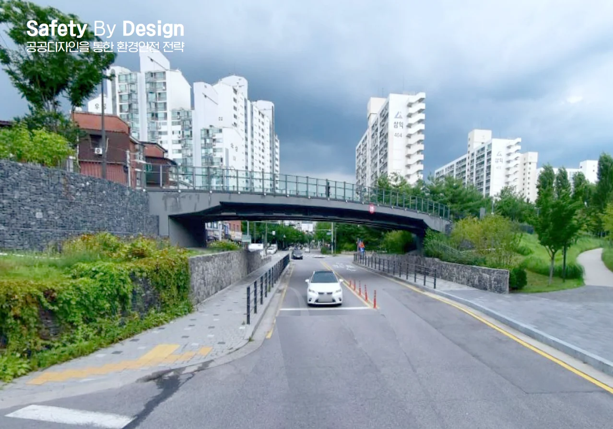
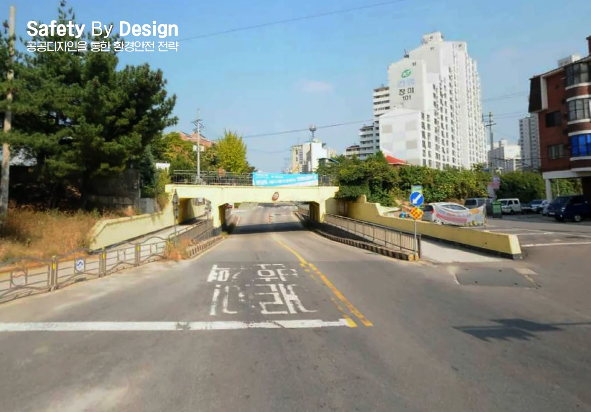
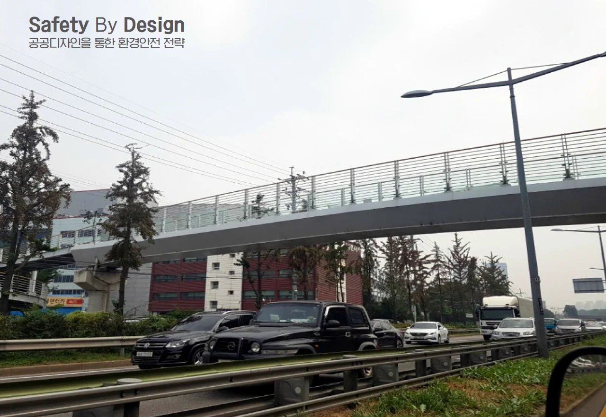
도시의 안전이 필요한 공공공간은 시각 투시율이 90%이상으로 보여져야 한다. 육교의 디자인에 있어서도 플랜카드나 식재, 구조물에 의해 이동하는 사람이 보여지지 않게 하는 것을 방지해야 한다. 공공공간의 투명도는 주변 구조물과의 형태적인 혼란도 방지함을 포함한다. 예컨대 가로형 패턴은 세로형 보행자를 대비하여 잘 보이게 하는 반면 세로형 패턴은 보행자의 수직형태와 겹치게 보이게 할 수 있다.
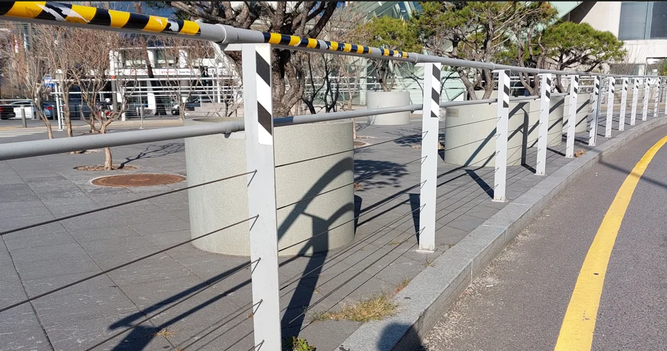
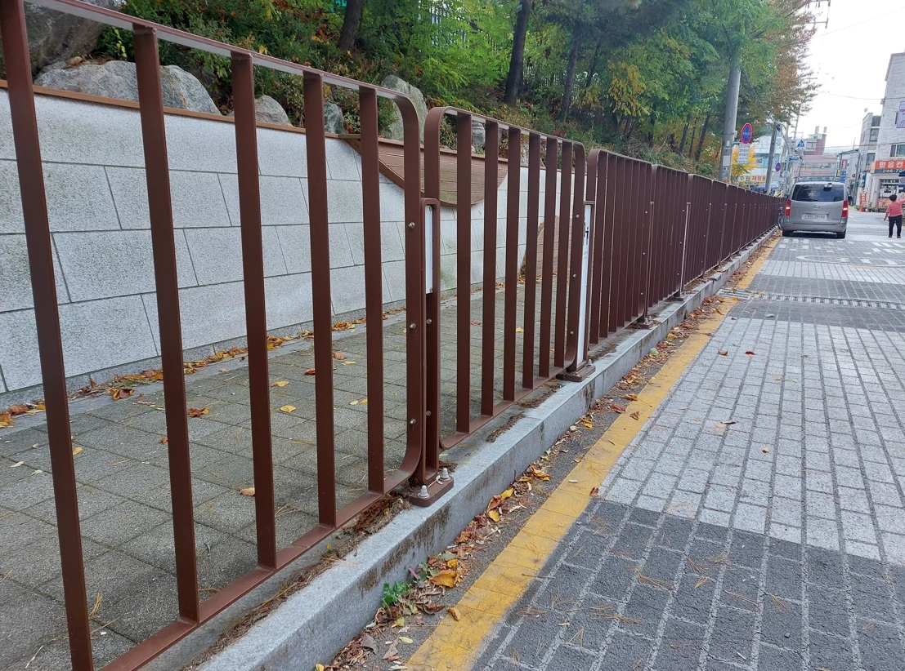
세로형의 휀스 디자인은 각도에 의해 소재의 시각적 밀도감이 올라가 내부 보행자가 보이지 않는 차폐를 만들 수 있다. 반면 가로형 디자인은 상대적으로 차폐감이 적다.
그림 7 스쿨존 교차로 휀스의 플랜카드 뒤로 아이의 모습이 보인다.
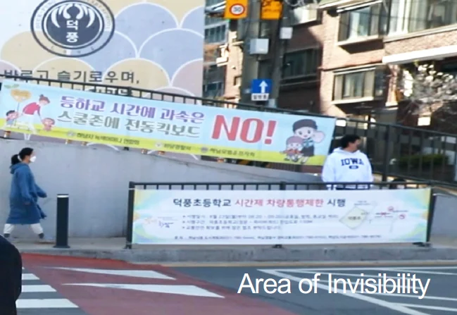
그림 8 후면의 자동차움직임까지 보이는 투명도가 높은 광고물
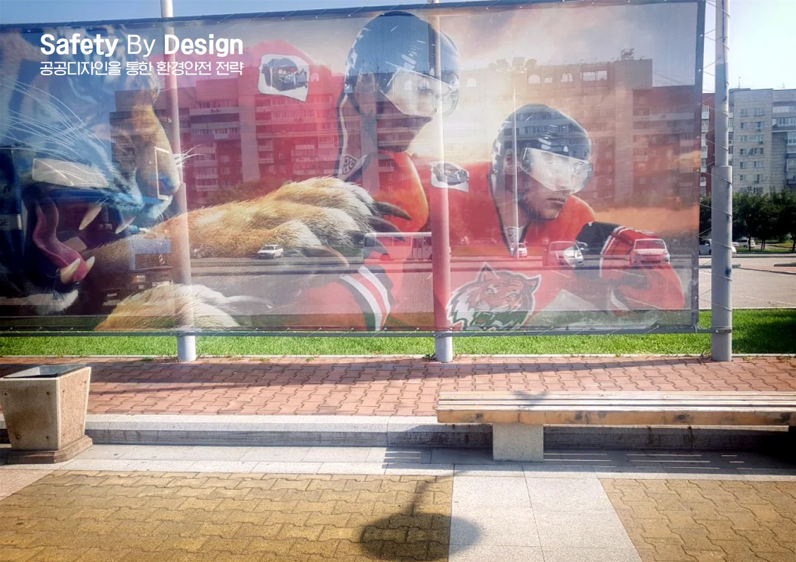
시각적 익명성을 강화하면 안전해진다.
2. 시각적 압박 V.P.P_Visual Pressure Point
Area of Visibility / Natural surveillance
“공공공간을 보고있다고 느끼게 하자”
공공공간에서의 활동을 관찰할 수 있도록 “거리의 눈(eye of street)”을 의도하여 설계하는 개념은 제인 제이콥스(Jane Jacobs)가 제시한 것이다. 시선 원점이 다앙하게 존재하여 그것에 내가 노출되어있다고 생각하면 자신의 익명성은 사라진다. 그에 따른 행동은 공적이며 절제되고 많은 신경을 쓰게 된다. 그에 따라 공공공간에서의 불필요한 부정적 활동이 감소하게 되는 개념이다.
밀폐되고 어둡고 좁은 골목에서 주변 사람들 그리고 CCTV 등의 요소와 시각적으로 단절되면 잠재적 범죄자의 심리에도 영향을 미친다. 또한 보행자 입장에서는 타인의 도움을 받기 어려운 상황에 놓여졌다고 생각이 들기 때문에 스트레스가 증가할 것이다. 내가 하는 행동이 다른 사람들에게 보일 수도 있다는 시각적 압박감을 통해 안전을 유도하는 것이다.
공공공간에 의도적으로 시각적 압박을 느끼게 할 수 있는 공간, 시설, 매체의 배치와 디자인은 거리의 눈을 늘리고 다양한 익명성의 시선으로 정온화된 공공환경을 조성한다.
그림 9 아파트의 베란다에서 놀이터를 볼 수 있는 다양한 시각의 잠재성은 놀이터의 정온화를 만들어 낸다.
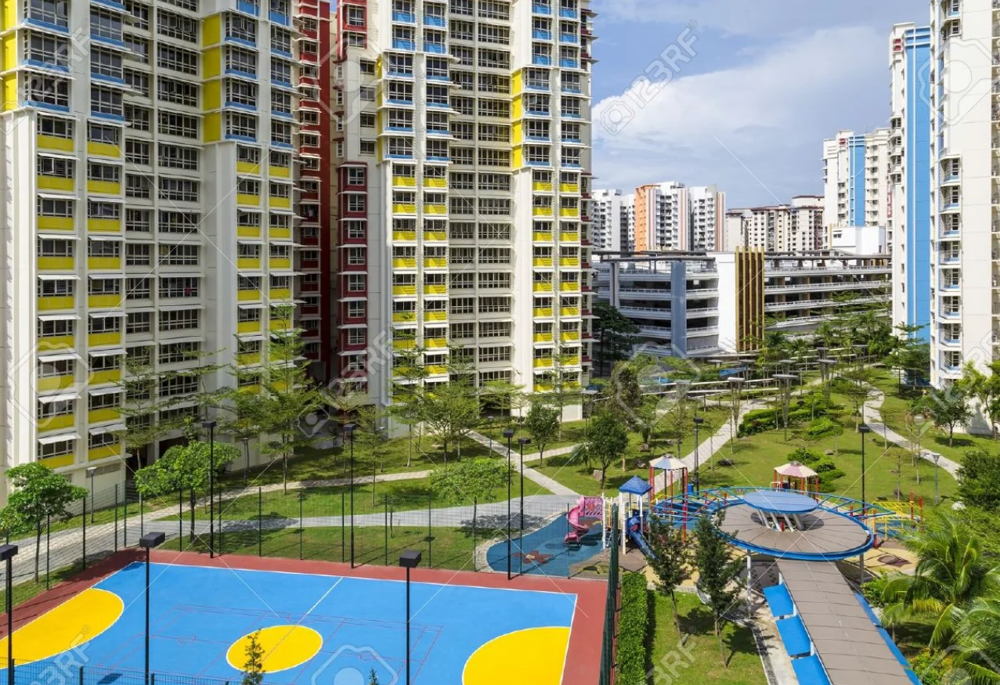
아파트는 형태적 특성상 높은 곳에서 아래를 내려다 볼 수 있기에 단지 내 배치를 고려한 아파트에 둘러싸여진 놀이터는 안전에 취약한 어린이들이 노는 동안 내부에 제3의 눈들로 보호관찰을 할 수 있다. 이는 내 자식뿐 아니라 이웃이라는 개념으로 입주민들이 서로 보호해줌으로써 문화적인 연결과 유대감을 통해 어린이들이 자라 어른이 되고 또 다시 이웃을 챙기는 지속가능한 문화적 가치로 사회에 선한 영향력을 행사해 줄 수 있음을 말한다.
그림 10 공중화장실이 많은 사용자쪽으로 입구가 배치됨으로써 다양한 시각적 압박에 노출된다.
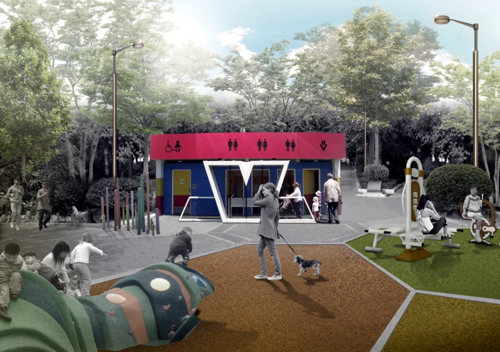
은행의 안전을 위해서 경비원과 CCTV를 배치하는 방법도 좋지만 부가적으로 은행 전면을 70%이상 투명도를 주는 것도 좋은 디자인다. 그리고 주변에 카페와 편의점을 설치하여 개방적 시선이 은행쪽으로 향하게 배치한다. 이러한 디자인 요소들은 은행 입구와 내부에 다양한 시각적 압박을 줄 수 있다.
횡단보도 앞 푸드트럭. 횡단보도 방향으로 늘 문을 열어두어 무단횡단이나 불법주차 및 과속 등을 자연감시하는 역할을 한다. 불법행위를 방지하고 감시하기 위해 무수히 많은 CCTV들이 도로에 설치됐지만 보행자나 운전자 입장에서 CCTV가 가시거리에 노출되지 않아 큰 경각심을 주지 않는 상황에서 사진속 개방형 푸드트럭은 불법행위를 저감시키는 환경을 조성한다.
그림 11 공공거리의 푸드트럭은 항상적인 시각적 압박을 주변에 줄 수 있는 긍정적 역할이 가능하다.
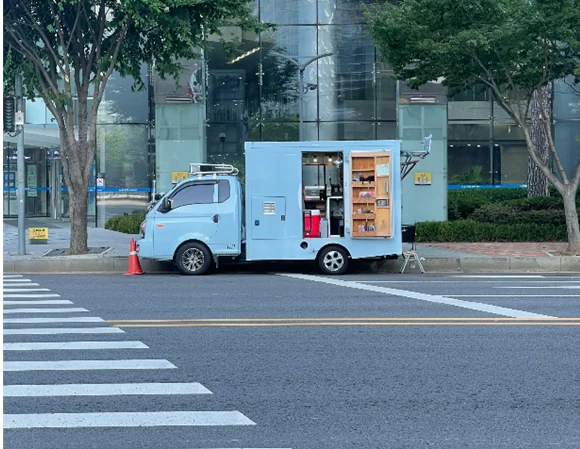
여기는 어떤 곳이라고 알려주면 안전해진다.
3. 인지적 정보 C.I.F_Cognitive Information Face
Area of Visibility / Natural surveillance
“공공공간의 영역에 채우기를 하자”
공공공간에 대해 영역의 인지성을 강화하면 공간의 기능이나 사용자가 명확해지고 지켜야할 의무나 사용자의 권리가 암묵적으로 전달된다. 공공공간에 관한 정보를 쉽게 인지시키는 디자인으로 공간의 장소성을 각인시켜줌으로써 안전을 확보할 수 있게 하는 디자인이다. 스쿨존과 같이 특정 공간에 상징적인 암적색 아스팔트로 영역의 정보를 표현하는 것이 좋은 예이다.
영역에 관한 인식 강화로 책임의식을 유발할 수 있다는 점에서 CPTED의 영역성강화(Territoriality Reinforcement)와 유사한 개념이지만 공공공간, 시설, 매체의 특성을 시각적으로정보로 제공하고 이해함으로써 입체적인 안전한 디자인 가치를 제공한다.
그림 12 어떤 규제사항도 없지만 어느 아파트단지의 주차장에서 차량속도가 더 느릴까?
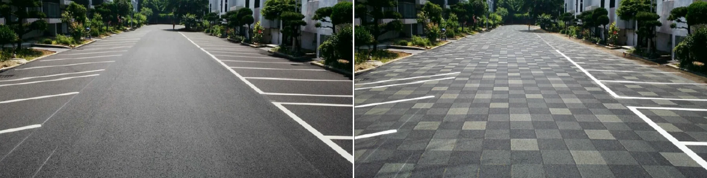
그림 13 자동차의 영역을 인지하게 하는 아스팔트를 보행로의 패턴으로 하는 공유공간(Shared Space)의 개념은 차량의 속도를 자연스럽게 정온화 시킬 수 있다.
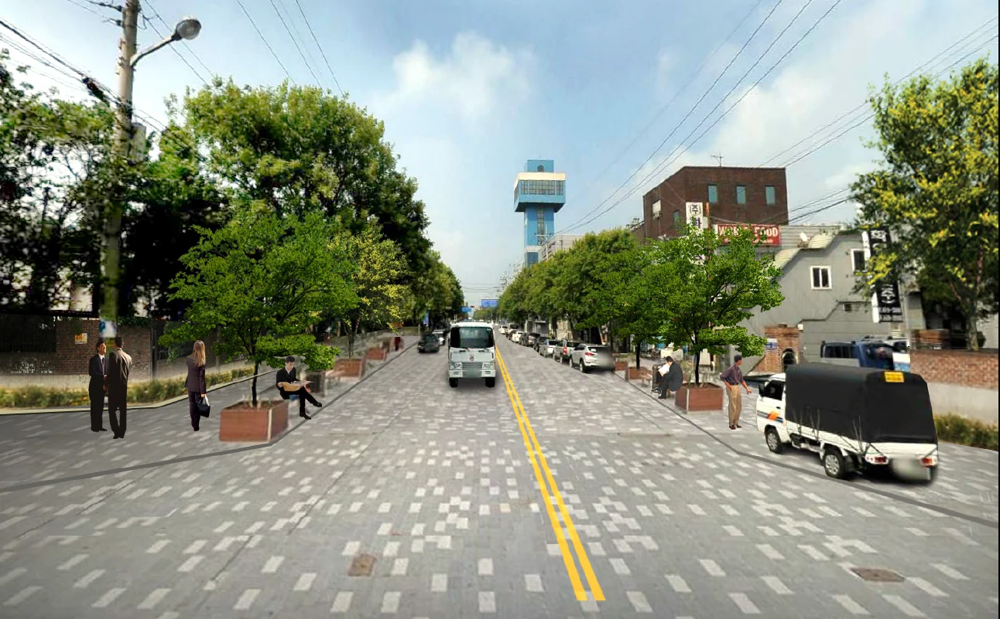
그림 14 샌프란시스코의 대중교통 전용 영역 정보를 강화한 Red Carpet은 설치 전보다 교총사고를 24% 감소 시켰다.
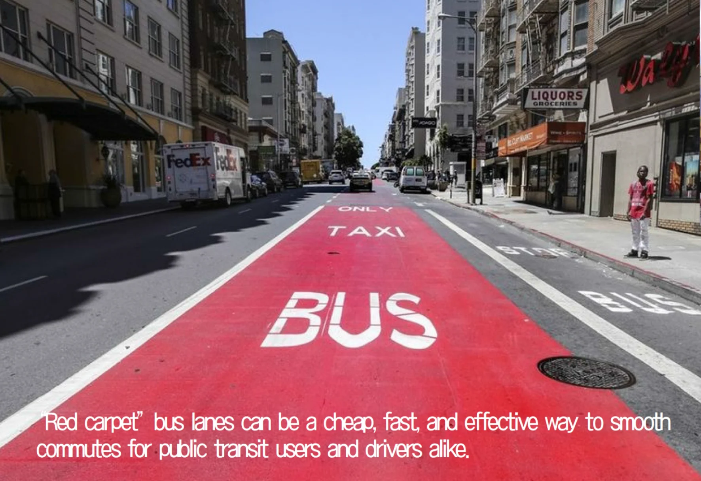
지시하지 말고 유도하면 안전해진다.
4. 심리적 유도 P.I.F_Psychological Inducement Effect
Nudge Design
“간접적으로 숨겨서 알려주자”
사용자들에게 규제나 금지에 관한 직접적인 지시정보들은 항상 받아들여지는 것만은 아니다. 심리적 관점에서 행동을 유도하는 넛지 디자인(Nudge Design)의 핵심은 은유(隱喩)적 방법을 적용하는 것이다. 은유란 숨겨서 가르쳐주다란 뜻이다. 직접적인 직유가 아닌 간접적인 방법이다.
시각적 정보나 색채요소를 통해 공공공간에서 우선시 해야할 행동에 대해 간접적으로 유도하는 것이 심리적 유도 P.I.F_Psychological Inducement Effect이다. 심리적 유도디자인으로 디자인을 통해 정온화를 위한 의도돤 어떠한 특정행동을 유도할 수 있도록 하는 디자인이다.
그림 15 골목에서 나오던 사람은 잠시 멈추어서 충돌을 주의하라는 간접적인 메시지를 갖게 된다.
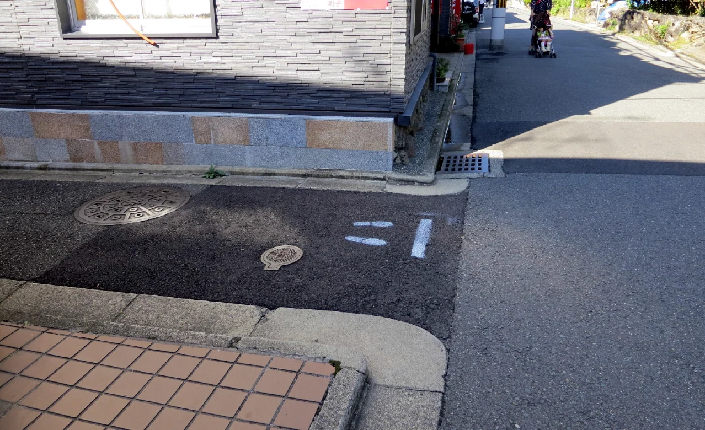
그림 16 계단의 진입부에 있는 패턴은 시각적으로 촉각적으로 단차가 있다는 것을 간접적으로 알려줌으로 급격한 높이로 인한 사고를 예방한다.
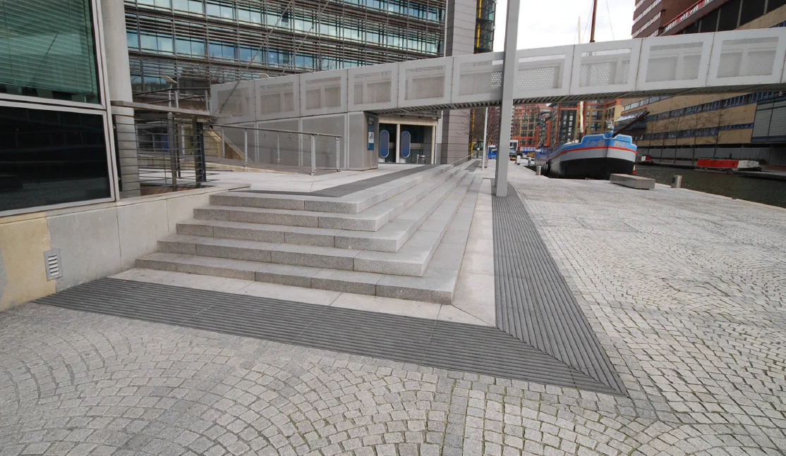
그림 17 노란색이 주는 경고의 인식은 보행로 공간에서 운전자의 주의의식을 간접적으로 전달할 수 있다.
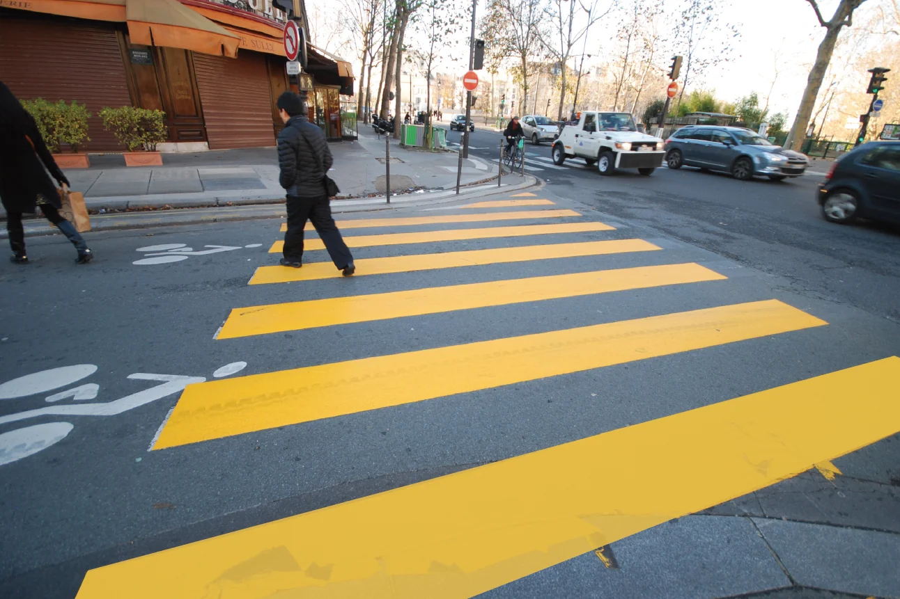
사용자 행동에 맞춰 지원하면 안전해진다.
5. 양성적 사용 P.U.S_Positive Use Support
Affordance design, Universal Design
“공공공간을 사용자 행태에 맞추자”
양성적 사용 P.U.S_Positive Use Support은 공간을 안전한 정온 상태로 만들기 위해 사용자 행태를 양성적으로 유지하거나 지원 및 유도하는 역할을 한다. 또한 안전을 유도하는 행태를 지원함으로써 긍정적인 공공 안전디자인 환경으로 만드는 것을 말한다.
그림 18 슬로프 계단은 장애인뿐만 아니라 바퀴달린 수단, 어린이 보행 등 많은 사용자에게 편한 보행 행동을 유도한다.
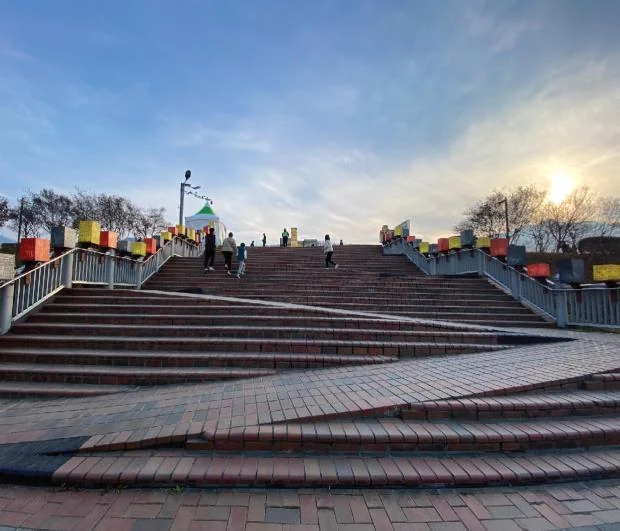
대구시 수성공원에 위치한 무장애 계단은 일반인들이 쉽게 올라가는 계단도 교통약자들에게는 돌아 가야하는 높은 산과도 같다. 그렇기 때문에 유니버설 디자인을 대입해 계단을 좀 더 안전하고 누구나 양성적으로 사용할 수 있도록 조성해 일반인과 교통약자들 간의 간격을 좁힐 수 있는 사회적 소통 장치로써, 미래사회를 위한 지속가능한 가치를 제공한다. 또한 PUS 가치가 함양된 경사로는 사람들에게 영감을 줘 행정적으로 널리 퍼질 수 있도록 한다.
그림 19 버스가 오는 방향에 직각으로 배치된 벤치는 버스를 기다리는 사용자들이 편하게 사용할 수 있게 지원한다.
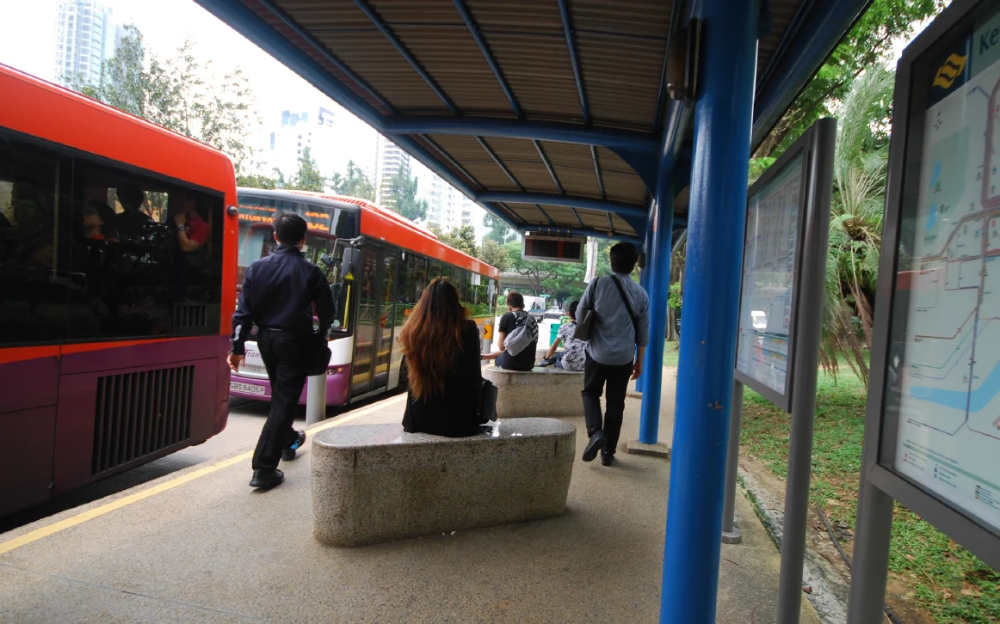
그림 20 바퀴달린 수단을 가지고 있다면 어디로 갈것인가?
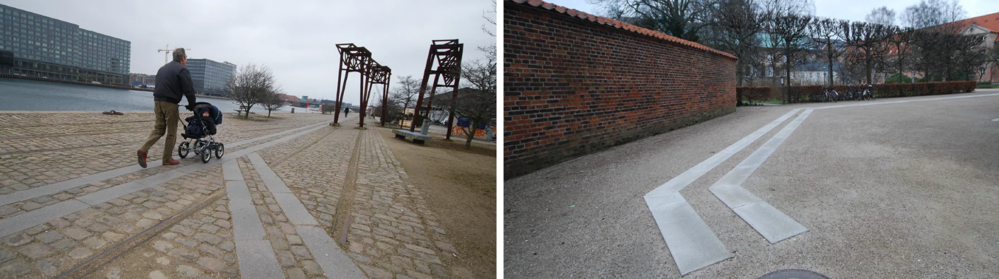
양성적 사용 P.U.S_Positive Use Support은 사용함에 있어 불편이 없도록 긍정적 사용 지원이 가능하도록 환경을 디자인하는 것이다. 유니버셜디자인과도 유사한데 누구나 잠재적 장애를 가질 수 있는 점을 감안하여 모든 시설을 보다 편리하게 사용할 수 있는 배려의 디자인 방법이다.
먼저 보아야 할 것을 강화하면 안전해진다.
6. 순차적 배치 H.L.O_Highlight & Lowlight Order
Gestalt Principle / Figure & Ground
“강조색과 배경색의 질서를 정하자”
순차적 배치 HLO는 색채사용에 있어 강조색과 배경색의 대비를 통해 중요한 안전시설을 강조하는 디자인이다. 강조색과 보조색을 통한 명도차이 및 대비를 통한 주목성, 명시성 강화로 보여야 하는 강조체(Figure)는 고채도로 잘 보이게, 배경이 되는 배경체(Ground)는 무채색으로 강조체가 더욱 돋보이게함으로써 안전을 유도하는 디자인이다.
정보전달과 안전을 위해 보여져야할 하이라이트를 위해 무채색의 로우라이트를 배치해 공간을 구성한다. 안전관련 정보를 우선시 보여줌으로써 명확한 정보전달을 통해 사용자들이 보다 안전하게 시설물을 이용할 수 있도록 한다. 또한 최소한의 저비용으로 장기적으로 안전사고 예방을 통한 경제적 효율성을 통한 지속가능한 공공 안전디자인 가치를 실현시켜 준다.
그림 21 도시공공공간에서의 배경이 되는 저채도의 구성과 잘 보여야 하는 안전시설의 유채색 구성의 예
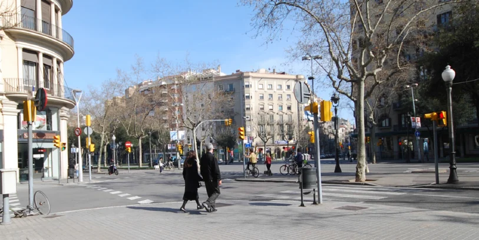
그림 22 안전색채를 우선하고 배경의 무채색 배치로 시각적으로 먼저 보여할 것에 대한 명확한 배치를 디자인한 사례
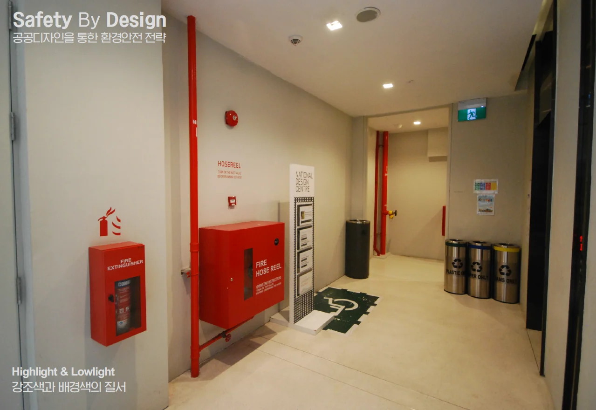
그림 23 강조(Highlight)되어야 할 안전색채와 배경(Lowlight)이 되어야 할 부분이 잘 적용된 예와 그렇지 않은 예
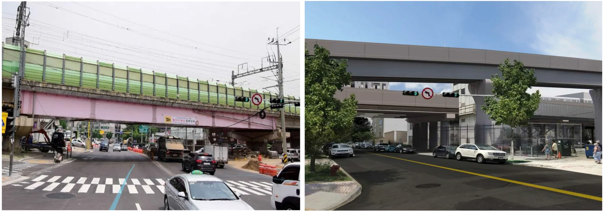
그림 24 산업안전보건법에 근거한 안전색채의 적용과 우선시 보여야 할 정보를 위해 배경색채의 절제된 사용
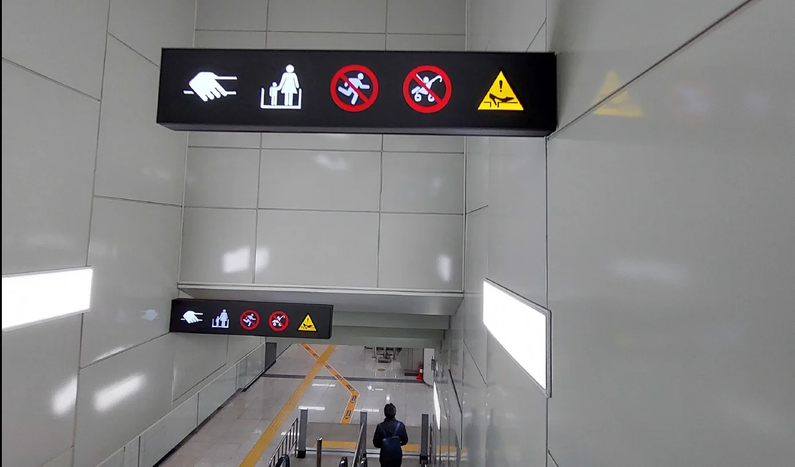
공간의 사용율이 올라가면 안전해진다.
7. 공간적 활성 S.A.P_Spatial Activation Program
activity support / Spatial Software
“공공공간이 활용되게 하자”
SAP는 디자인관점에서 공간활성화 프로그램 개념으로 비활성화된 공공공간에 사람들을 모이게 함으로써 유동인구를 늘리고 안전을 유도한다. 나아가 지역거점으로 공간을 활성화 시키고 좀 더 효율적인 안전가치를 함양할 수 있도록 한다.
그림 25 암스테르담 ‘A8ernA’ 고가 하부공간 활용
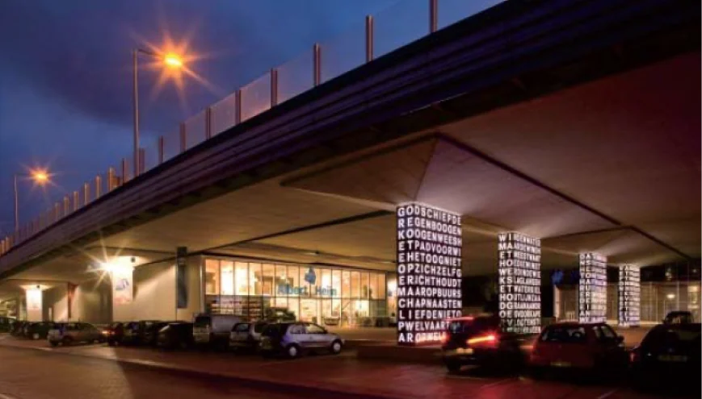
네덜란드 잔(Zaanstad)이라는 도시에서는 교각하부공간의 슬럼을 방지하고 활성화 하기 위해 슈퍼마켓, 생선가게, 꽃가게등 주민들이 원하는 소매시설을 조성하고 시민들의 레져와 편의시설을 확충하였다. 이를 통해 교각 하부의 슬럼과 음성화를 자연스럽게 방지하고 공간의 사용성을 증대하여 커뮤니티 공간으로서 가치를 갖도록 하였다.
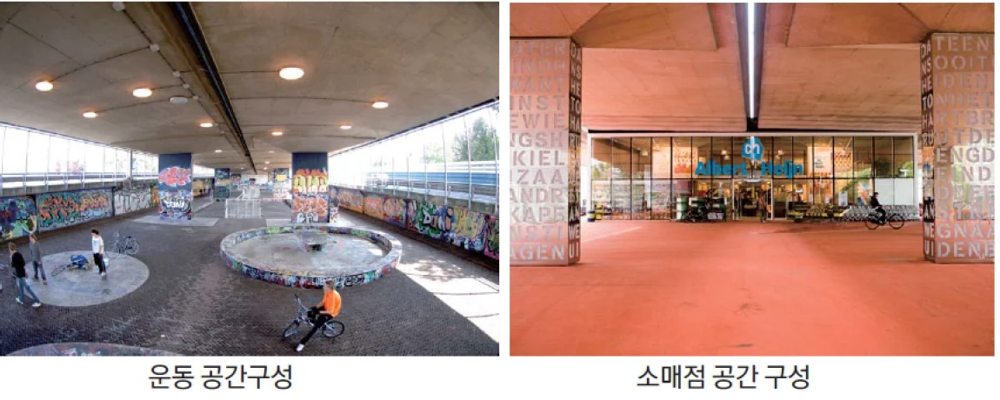
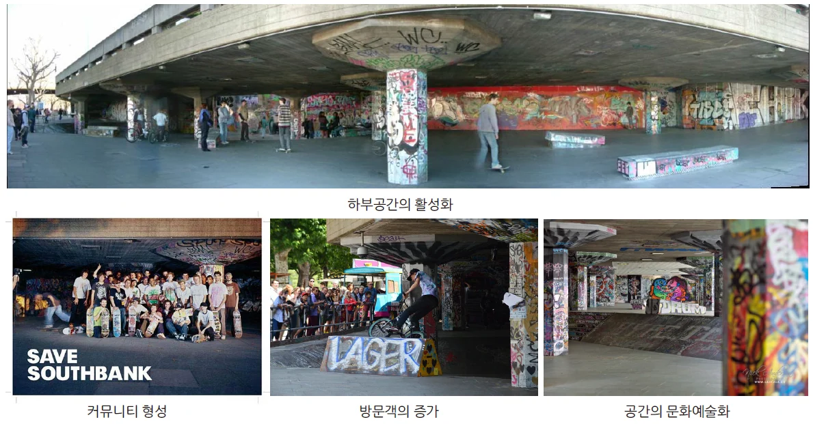
런던 중심부의 사우스뱅크 템즈강변의 공연장 공간 하부 공간을 스케이트 보드장으로 양성화 하여 슬럼이 되기 쉬운 음성적 공간을 독특한 지역문화의 공간으로 만들어 커뮤니티 형성과 방문객의 증가효과를 보았다.
협력을 강화하면 안전해진다.
8. 협력적 관리 S.C.G_Safety Cooperative Governance
Collective Impact / Maintenance and management
“많은 사람들이 함께하게 하자”
SCG는 안전 협력 거버넌스로 지역에 안전에 대한 목적성을 실현시키기 위해 집합적인 협력구조를 통해 안전에 관하 ㄴ괸리를 추구하는 거버넌스 디자인이다.
작게는 공공시설의 공동관리부터 지역주민과 주민협의체 NGO(Non Government Organization) 비정부기구 전문가들이 규합해 지속가능한 거버넌스 계획을 구축하는 범위까지 포함된다.
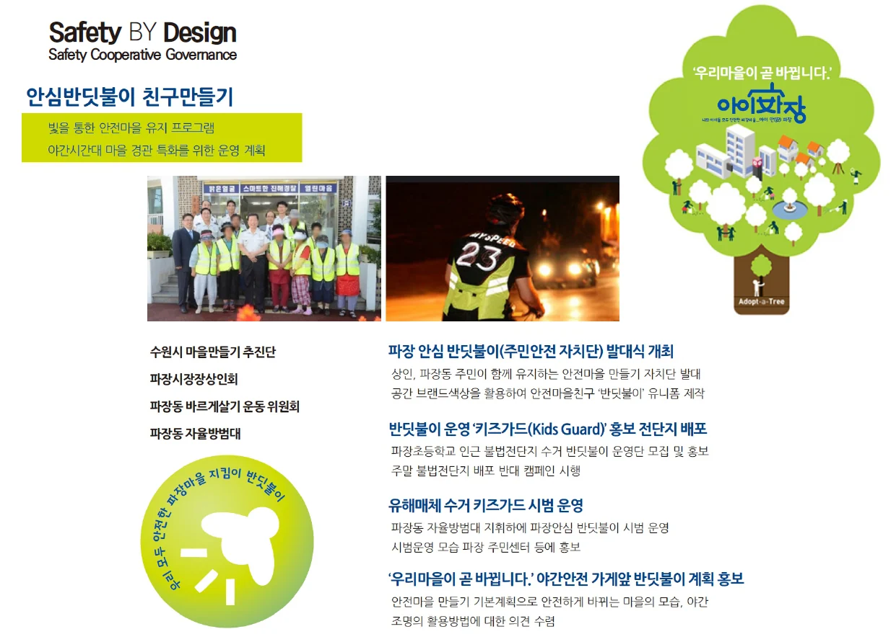
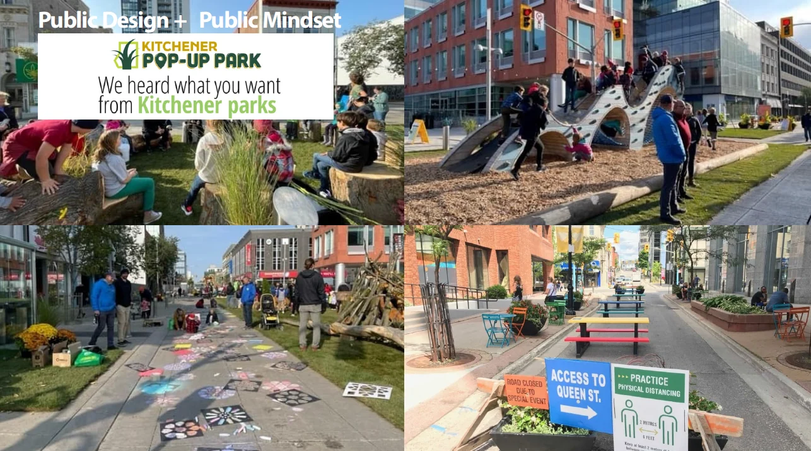
캐나다 Kitchener 시는 King Street 시내에 3일 동안 팝업 공원을 거버넌스 기반으로 디자인하여 설치하는 행사를 진행하였다. 토론토에 기반을 둔 회사인 Eight Eighty Cities, 무슬림 커뮤니티와와 집합적 협력 거버넌스를 통해 이 공원을 지역 사회 구성원들에게 공공공간의 필요성과 의식개선 그리고 참여시킬 수 있는 방법으로 팝업 파크를 전략으로 활용하였다. 지역의 이민자들과 원주민들간의 갈등을 공원을 조성하는 거버넌스의 조성을 통해 예방한 협력적 관리 S.C.G_Safety Cooperative Governance의 좋은 예이다.